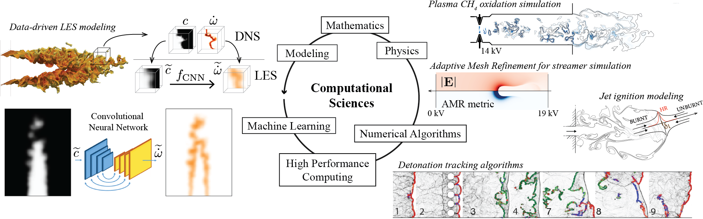

Welcome to my website. My name is Quentin Malé, I am computational physicist. I develop novel computational methods for multiphysics flows, leveraging high-performance computing and machine learning to push the limits of simulation and modeling. My research unites physics, machine learning and large-scale computation to advance science and engineering in energy and complex flow systems.
Here you will find information about my current and past research work. The research works section illustrates my main scientific contributions. The publications section lists journal publications, which give more details about the research work. The codes and data sections present shared computational codes and data, respectively. The student projects section links to student projects that I could offer and supervise.
2025 onward I am currently a postdoctoral researcher at Harvard University, CSElab. I am mainly working on the development of novel methods from machine learning to model subgrid-scale features in large eddy simulation.
2024 I was an established researcher at ETH Zürich. I mainly worked as part of the SNSF/ANR PRCI ''Joint Experimental and Numerical Study of Hydrogen Plasma-Assisted Combustion'' (JETHPAC) project, for which I wrote the proposal with my project partners. The JETHPAC project investigated plasma-controlled ignition in lean hydrogen-air mixtures. It was a multidisciplinary project combining experiments and High Performance Computing (HPC). The development of plasma-controlled ignition for hydrogen helps to control the energy conversion of this carbon-free fuel, and thus move towards sustainable energy systems. I also supported HPC for scientific computations in my host laboratory (CAPS, ETH Zürich).
2021 - 2024 I was a postdoctoral researcher in the CAPS laboratory of ETH Zürich. I mainly worked on a joint experimental/computational project (ERC TORCH) to investigate the physics of sequential flame stabilization in sequential burners using non-equilibrium plasma. I combined modeling and High Performance Computing (HPC) to study the physical phenomena associated with plasma-controlled aerothermochemistry. I also supported the research group of the CAPS laboratory on HPC aspects.
2017 - 2020 I was a PhD student at CERFACS, under the guidance of Prof. Dr. Thierry Poinsot and Dr. Olivier Vermorel. During my Ph.D. work, I studied turbulent jet ignition concept to enable lean-burn strategies in reciprocal engines. For this, I used a wide range of numerical simulation tools including kinetically detailed Direct Numerical Simulation (DNS), Large Eddy Simulation (LES) and reduced order modelling. I also developed automatic remeshing strategies needed to cope with cell deformation in moving mesh computations. This includes remeshing, interpolation and load-balancing.